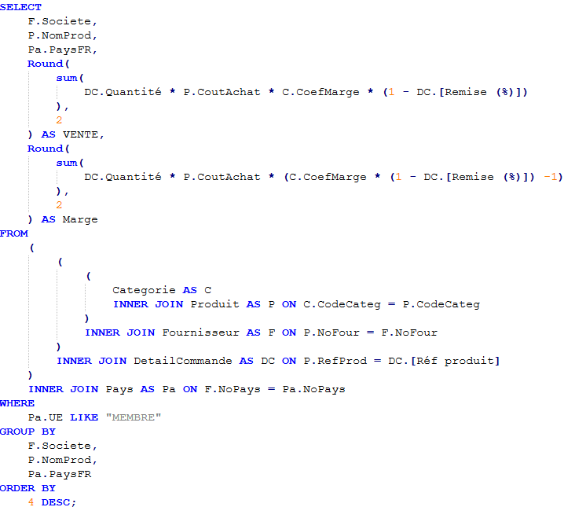
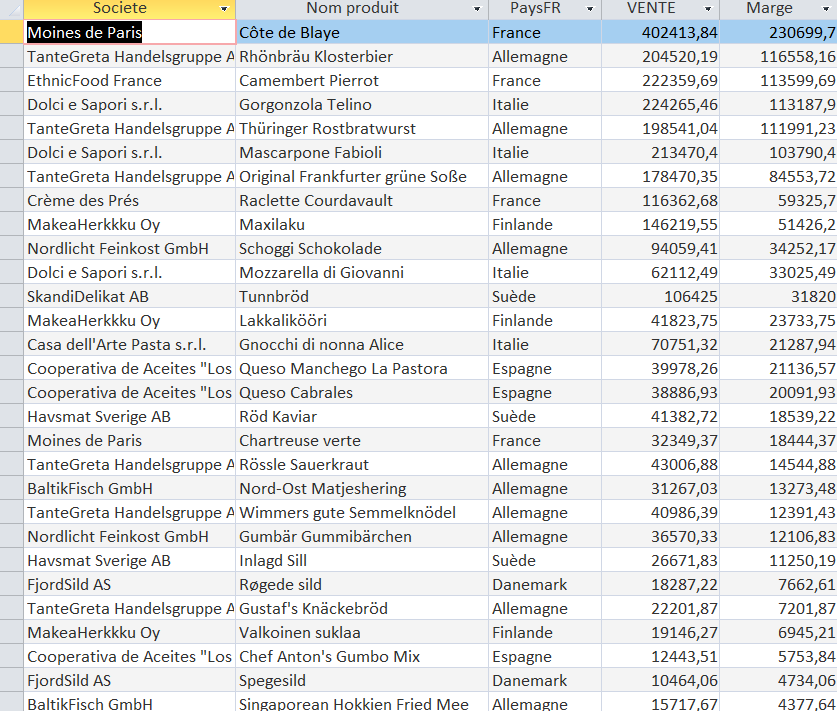

Dans une réflexion en lien avec l’origine de ses produits : Quel est le CA total généré à ce jour avec les fournisseurs de l’UE ?


L'intérêt d'analyser le CA des produits issus de fournisseurs de l'UE est de repérer les produits les plus rentables pour KDou. Cela permet également d'identifier les fournisseurs avec lesquels maintenir de bonnes relations et ceux avec qui des ajustements sont nécessaires.
La requête détaille le CA par produit et par fournisseur, avec le pays d’origine et la marge générée par KDou. Afin de pouvoir pleinement identifier l'origine des produits. Les résultats sont classés du plus gros CA au plus petit afin de repérer les fournisseurs dont les produits rapportent le plus.